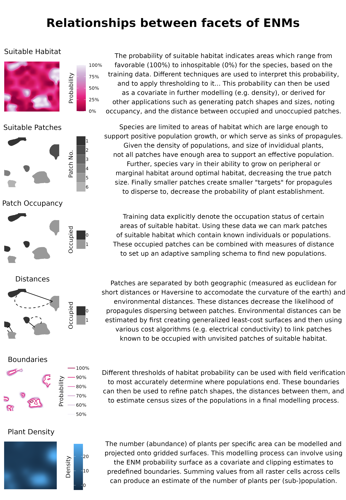
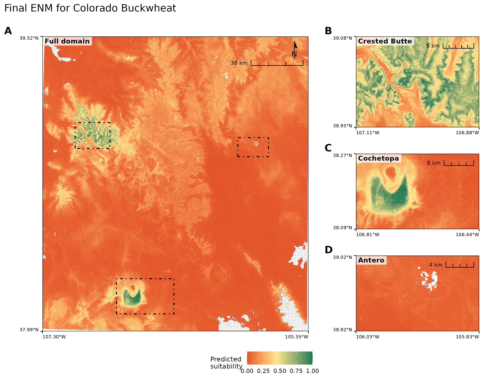
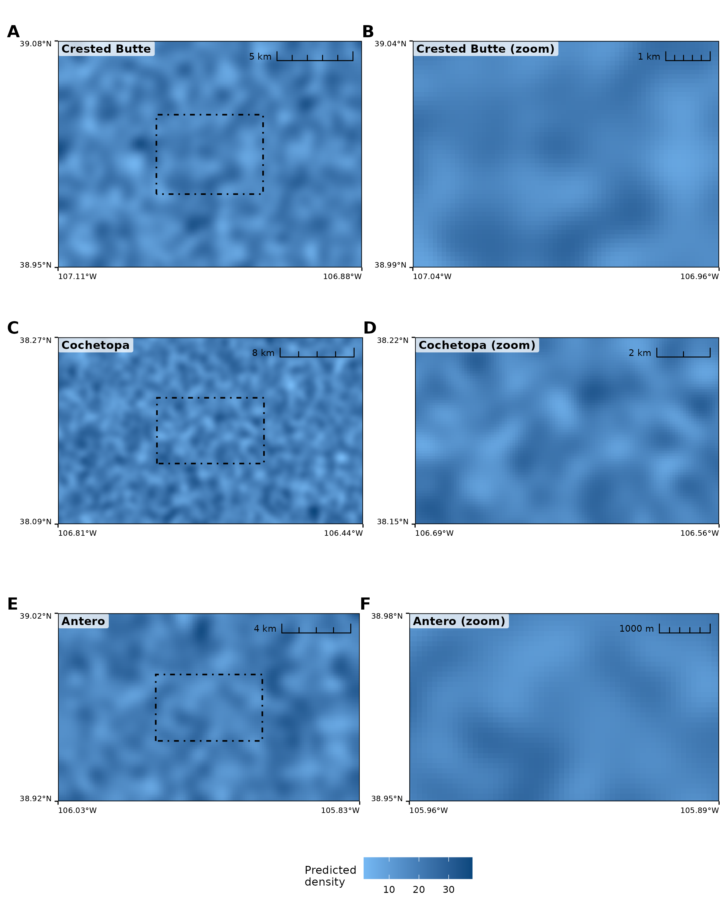

Using ecological niche modelling for population mapping, and census sizes estimations of a rare plant
Abstract
Aim) Species distribution models (SDMs) are rarely field verified at landscape scales, and it remains unclear how accurately their predictions, especially at fine spatial resolutions, reflect reality, or can guide the detection of new populations and sub-populations of rare plants. Further, their ability to extend beyond habitat classification to support estimates of population census size is unknown. We tested whether SDMs built at different resolutions, combined with distance-based sampling and density modelling, can achieve both. Location) South-central Rocky Mountains, Colorado, U.S.A. Methods) We compiled occurrence records for Eriogonum coloradense, a geographically narrow endemic, from regional herbaria and iNaturalist, and built random forest ENMs at three spatial resolutions (3, 1, and 1/3 arc-second). Before evaluating any model, we ground-truthed the raw occurrence dataset itself and conducted preliminary surveys to estimate what a dedicated survey team would document. We then tested model predictions using a spatially balanced, adaptive occupancy-based sampling design, classifying newly discovered sites as extensions of known populations, new sub-populations, or new populations based on their Euclidean and least-cost distance from existing occurrences. Plant density was modelled using both Bayesian and five machine-learning approaches (XGBoost, light gradient boosting) under spatial and non-spatial cross-validation and combined with modelled population boundaries to estimate census size. Results) Main Conclusions)
Keywords
spatial data science, land management, conservation, rare plants, landscape ecology
1 | Introduction
https://onlinelibrary.wiley.com/doi/10.1111/ele.12189 https://onlinelibrary.wiley.com/doi/full/10.1111/ddi.13795 # maybe https://www.cell.com/trends/ecology-evolution/fulltext/S0169-5347(18)30304-5 https://www.nature.com/articles/s41559-026-03125-y # maybe
The effects of anthropogenic stressors have led to a global biodiversity crisis, with estimates suggesting that 20-45% of plant species are facing extinction (Bachman et al. 2024; Brummitt et al. 2015; Pimm and Joppa 2015; Lughadha et al. 2020). Determining which plant species to focus our conservation efforts (e.g., active restoration, preserve creation, ex situ collections) on requires an array of natural history data seldom available to decision-makers (Heywood 2017). The environmental niche of a species, its occupied geographic extent, the occupancy of sites within the range, and the census size of populations are all essential attributes for evaluating a species’ continued existence against anthropogenic stressors (Commission 2001; Faber-Langendoen et al. 2012; USFWS 2016). Although these attributes are relatively simple to characterise, implementation is time-consuming, requiring extensive fieldwork - hence requiring proxies for conservation assessments (Juffe-Bignoli et al. 2016; Bland et al. 2015; Pelletier et al. 2018). Environmental niche models (ENMs or Species Distribution Models, SDMs) have made enormous contributions to two of these attributes; describing the realised environmental niche of a species, and the species’ geographic extent within it (Syfert et al. 2014; R. P. Anderson 2023; Kass et al. 2021). Further, this progress - paired with a growing volume of occurrence data from citizen science platforms and the digitisation of natural history museum records - offers promise for modelling the remaining two attributes, occupancy and census size (Markham et al. 2023; Feldman et al. 2021).
However, despite this progress, the utility of models is seldom field verified, especially at landscape scales (Chiffard et al. 2020; A. Lee-Yaw et al. 2022). Even despite an awareness that ENMs generally suffer from having few, often spatially biased, occurrence records as dependent variables, which often fail to characterise the ecological breadth of the species niche (Stolar and Nielsen 2015; Feeley and Silman 2011; Pili et al. 2025). Accordingly, while many ENMs achieve high performance on hold-out test subsets, biases in the training data may be propagated into predictions (A. Lee-Yaw et al. 2022). Increasingly adaptive-niche-based sampling (ANBS), which generates larger data sets of both presence and absence records for training – leading to more robust models, while possibly obtaining more data from sparsely sampled niche space. However, most ANBS sampling has preferentially visited cells with high predicted occurrence probability (Guisan et al. 2006); because such cells are often close to already-known occurrences, this tests a model’s easiest predictions rather than expanding its training data to better reflect the species niche. Refitting a model with this newly acquired data not only expands the presence/absence pool ((ALLOWING BETTER PARTINIONING OF CONTRIBUTIONS OF INDEPENDENT VARIABLES)), but also verifies coordinate placement, confirms that historic points are still extant ((BOTH DECREASING RECORDS OUTSIDE THE NICHE)), reduces model uncertainty, and may yield additional data such as census estimates and life stage demographics (Stockwell and Peterson 2002; Wisz et al. 2008; Jansen et al. 2022; Mondain-Monval et al. 2024). Ground-truthing results are, in any case, seldom shared or reported for plant species, and even less effort has apparently been made to first verify the baseline reliability of existing records for rare species specifically (Johnson et al. 2023; Borokini et al. 2023; Zimmer et al. 2023).
The spatial grain of environmental variables has often been too coarse to model the micro-environments that govern many rare plants’ distributions, especially in heterogeneous environments (Guisan et al. 2013). Accordingly, most early ENM work targeted resolutions useful for conservation policy decisions, while resolutions fine enough for natural resource professionals’ individual management decisions remain nascent. Recent advances in remote sensing, statistics, and software have narrowed this resolution mismatch (Zellweger et al. 2019). Recent papers have had mixed results regarding the effects of imprecisely mapped occurrence data on ENM predictions, with indications that models generated in more heterogeneous environments, and at finer resolutions (e.g. ca. 3 arc-second to 10 arc-minutes (~14.5km at 38\(^\circ\))) suffer minor decreases in model performance (Graham et al. 2008; Smith et al. 2023) with real species, while increasing error in mapping has drastic effects on model predictions with virtually simulated species (Gábor et al. 2022).
An ENM predicts a single variable: the probability of suitable habitat for the taxon (taddeo2026diversitydistributions). However, in most conservation applications, the insight desired from an ENM is actually the species’ realised distribution (cite). Significant progress has been made integrating ENM predictions with models of dispersal, recognising that the bridge between an ENM and a plant population’s presence is propagule dispersal and establishment, not the distribution of the fundamental niche alone (Guisan and Thuiller 2005; Franklin 2010; Engler and Guisan 2009). Previous innovations have largely focused on connecting currently suitable habitat to habitat predicted to be suitable under climate change (Engler and Guisan 2009; Bocedi et al. 2014), rather than on detecting populations that already exist but remain undiscovered. To assist practitioners in detecting new populations or extending the range of known populations, we propose modelling plant occupancy as a random variable that depends on distance from known occupied sites. ‘Distance’ may be defined as Euclidean (or Haversine), or as a least-cost distance reflecting a generalised surface which conveys the difficulty for propagules (e.g. seeds) to travel between the nearest occupied sites and the site of interest (Etherington 2016). By combining habitat suitability with both Euclidean and least-cost distance, we distinguish candidate sites as extensions of known populations, new sub-populations, or new populations, rather than relying on suitability alone to prioritise field verification.
Obtaining reliable estimates of plant population census sizes requires two pieces of information: 1) measurements of plant density and 2) population extent. Observers often estimate population sizes rather than directly measuring boundaries or density, which can be unreliable and does not carry estimates of uncertainty (Reisch et al. 2018). Several field methods for acquiring density measurements have been developed (Rominger and Meyer 2019; Krening et al. 2021; Ermakova et al. 2021; Alfaro-Saiz et al. 2019; Schorr 2013) to estimate population census size (N), as well as genomic methods to estimate effective population sizes (Ne) (e.g. linkage disequilibrium) (Waples 2024). However, these methods are focused on descriptive rather than predictive processes, estimating uncertainty in measurements within a population rather than across the species’ range without the use of covariates. We propose generating density estimates with spatial statistical models that predict both estimates and uncertainty across gridded surfaces (Oliver et al. 2012; Doser et al. 2024; A. Lee-Yaw et al. 2022). The second requirement, mapping a population’s boundaries, is similarly time-consuming but essential for an accurate census size estimate. Currently population boundaries are delineated implicitly: practitioners walk outward from the population until gene flow between individuals should be minimal (e.g., 1km), searching for additional individuals, or rely on aerial imagery (Elzinga et al. 1998). Many rare plant species are small and inconspicuous, and many taxa grow in small, clustered groups in specific habitats, making detection via either method difficult (G. Chen et al. 2013; Condit et al. 2000).
- An ENM models the continuous probability of suitable habitat for a taxons realized niche, that is the habitat it is expected to grow to maturity in, based on known occurrences.
- The ENMs continuous probability function is converted into a presence / absence flag using thresholds along the gradient. The threshold may try to reduce false positives, if a conservative range estimate is required, reduce false negatives for a more inclusive result, or balance these characteristics.
- Suitable habitat in closer proximity to known occurrences is more likely to be populated, and indeed the lack of notation may simply be due to the time required to map presences, a form of the beach problem.
- Plant density is modelled using a similar suite of covariates as an ENM, with the option to include the ENM as the variate.
- Census size estimates are a combination of plant density throughout a population, and a populations border.
Here we: 1) evaluate the results of the best-performing model with ground truthing (within 270m of existing occurrences). 2) Compare the results of models from different resolutions to the best model, as based on hold-out test data. 3) Determine whether model predictions are useful to find new sub-populations (270m - 450m from existing occurrences), or populations (> 450m from existing occurrences). 4) Estimate population census size using 4a) estimates of plant density, and 4b) modelling of population boundaries.
2 | Methods
2.1 | Study Species & System
Eriogonum coloradense Small (Polygonaceae) is a synoecious, mat-forming perennial herb endemic to the south-central Rocky Mountains of Colorado, U.S.A. Its known range spans five counties and encompasses 22 documented populations, occurring across a broad range of elevation (2700-3900m asl), slope, aspects, soil types, and habitats - from high-elevation sagebrush steppe, through subalpine grasslands, to alpine slopes. It is ranked S3/G3 by NatureServe and listed as a Tier 2 species in Colorado Parks and Wildlife’s State Wildlife Action Plan [D. G. Anderson (2004); NATURESERVE].
This taxon is largely pollinated by solitary bees, flies and butterflies, which are known to generally forage under 1km(Gathmann and Tscharntke 2002; Zurbuchen et al. 2010). Further given the topographic roughness of this area, we tenatively define populations as being isolated by <500 meters, translated to 470m to match the 90m resolution grain.
2.2 | Data Acquisition
Occurrence records were downloaded from iNaturalist (80 records) and the Consortium of Southern Rockies herbaria (131 records) (iNaturalist 2024; Southern Rocky Mountain Herbaria Portal, n.d.). These data were manually reviewed, and 16 herbarium records were removed due to low geolocation quality or a georeferenced locality inconsistent with the specimen label which we could not accurately identify; leading to 107 presence records.
Digital elevation models (DEMs) at 3 arc (TYPE) and 1 arc (TYPE) resolution, and digital elevation products (DEPs) at 1/3 arc resolution, were acquired from the United States Geological Survey and clipped to the analytical domain, a rectangle buffered 16 km (10 mi) beyond any known population. These elevation products were used to derive most geomorphology datasets with whiteboxTools (Wu and Brown 2022), plus heat load and diurnal anisotropic heat indices calculated with spatialEco (Evans and Murphy 2025). Vegetation cover data were generated by combining raster layers into three continuous cover classes: Forested, Shrub, and Herbaceous (Tuanmu and Jetz 2014).
ClimateNA was used to downscale GridMet (Cite) data to 3 arc-second resolution, which was then bilinearly interpolated to generate products at the 1 and 1/3 arc resolutions (Wang et al. 2016). Gray-Level Co-occurrence Matrices (GLCM) were produced with the glcm R package from 2023 NAIP aerial imagery (CITE), bilinearly resampled to the original resolution, using default settings with a window size of 5 in both directions (Zvoleff 2020).
Collectively these resulted in 50 independent variables for ENM modelling.
2.3 | Ground Verification (H1)
As our taxon has not had recent targeted survey work carried out for a it, a first round of sampling was used to detect occurrences which would be found by a field botanist without the need of statistical modelling approaches and thereby inflate the results of our study. The first round of ground sampling was carried out from June to September 2024. All pre-existing occurrence points were considered candidates for revisits, and 25 trails leading to them were marked as sample areas. Each trail was manually mapped and buffered by 45m in each direction; 551 random points were drawn, thinned to distances > 90m, leaving 309 random plots for assessment. 13 trails were visited, allowing for the assessment of 171 random points, of which 20 had new occurrence records. When conducting fieldwork presences of E. coloradense were opportunistically noted to better describe the spread of the population, quadrats were quasi-randomly placed - accounting for local abundance - ca. 30-50m from the previous plot until traversing out of the population (n = 246). Subjectively placed absences were also collected in areas that seemed favourable or were in proximity to E. coloradense individuals; this occurred in the field (n = 129). Absences in areas known to be outside the range of the populations were also added later via aerial imagery (n = 66). At each occurrence site, individuals were counted by three maturity stages (mature, juvenile, and seedling) in 3x3m quadrats.
2.4 | Comparison of Different Spatial Resolutions (H2)
Environmental niche models were generated at three spatial resolutions: 3 arc-second (~72m), 1 arc-second (~24m), and 1/3 arc-second (~8m). The modelling details followed the same process across spatial resolutions. Spatial data processing was largely performed in R (R Core Team 2026), using sf (E. Pebesma 2018) and terra (Hijmans et al. 2026), with modelling implemented with the tidymodels framework (Kuhn and Wickham 2020).
Records were thinned to the distance of a hypotenuse of a cell to avoid pseudo-replicates using spThin (Aiello-Lammens et al. 2015). 1.1 times as many background absence records as presence records were generated using the environmental distance from the sdm package (Naimi and Araujo 2016). These records were manually reviewed, and six records in areas with possible presences were removed. After this, the records were randomly sampled to reduce the dataset to XX records. After the first modelling iteration, all additional presences and absences were thinned using spThin similarly and combined with the original absence records. ‘Presences’ with greater coordinate uncertainty than the modelling resolution were removed.
Prior to fitting, uninformative predictor variables were removed for each model using Boruta feature selection, retaining both confirmed and tentative important variables (Kursa and Rudnicki 2010). The mTry and tree-depth hyperparameter were tuned using caret (Kuhn and Max 2008). All random forest models were fit using the ranger package; 95% confidence intervals were generated using the infinitesimal jackknife (Wager et al. 2014; Wright and Ziegler 2017).
2.5 | Occupancy Based Field Sampling (H3)
360 candidate ground-truthing sites and 180 oversamples were selected using a spatially balanced Generalized Random Tessellation Stratified (GRTS) design (Dumelle et al. 2023), stratified by named site regions and allocated proportional to each region’s candidate-pixel count (DEFINED AS?), which was restricted to areas which a human could safely sample. Within each region, pixels were prioritised using a weighted combination of 1) predicted suitability, favoring the ~50% probability band; 2) Euclidean distance from known occurrences, favouring the underrepresented far tail; and 3) a cost-distance anomaly. The cost-distance anomaly utilises within-region residuals of least-cost distance (Etten 2017) regressed on Euclidean distance, which flags cells where terrain-based travel difficulty diverges most from straight-line expectations.
2.6 | Plant Density (H4a)
Plant density (plants per 3 \(\times\) 3 m quadrat) was modelled with a ladder of approaches of increasing complexity, each evaluated under spatial and non-spatial cross-validation (Milà et al. 2022) and against the held-out 2026 field plots. Because low-elevation plots hold roughly sixfold more plants than high-elevation ones, models were fit and scored separately within each elevation phase. Within each phase, train and test sets were partitioned by data twinning on rescaled coordinates and counts (Vakayil and Joseph 2026).
The ladder ran from null baselines (the per-phase mean and median), through interpolators of the observed counts – ordinary kriging (E. J. Pebesma 2004), inverse-square inverse-distance weighting, and \(k\)-nearest-neighbour averaging – and a single-covariate Poisson GLM on habitat suitability, to fitted models: gradient-boosted trees (XGBoost with Poisson and Tweedie likelihoods, LightGBM with Poisson) (T. Chen and Guestrin 2016; Ke et al. 2017) and Bayesian hierarchical models (brms; Poisson, negative-binomial, and hurdle negative-binomial, each with population as a fixed effect and a Gaussian-process spatial term), the last of which yield posterior credible intervals on the population total (burkner2017brms?).
2.7 | Population Boundaries (H4b)
Population boundaries were delineated by thresholding the continuous habitat suitability surface from the best-performing model using two different threshold-selection rules 1) sensitivity, and 2) equal sensitivity and specificity (Hijmans et al. 2024). Sensitivity is the ability of a model to accurately predict occurrences at the expense of false positives, while equalizing it with specificity balances accuracy of both classes (Hijmans et al. 2024). Because the sensitivity-rule polygons were nested entirely within the spec_sens-rule polygons rather than crossing them, we used the smaller (sensitivity-rule) polygon’s outer edge as the baseline for transect placement, treating the band between the two polygons as the zone where the two threshold rules disagree - and the area to test which rule better represents the population’s actual extent. For each patch, we identified the smaller polygon’s outer edge using native raster boundary detection (4-connected neighbours), generating candidate transects along the four cardinal directions from each edge cell. Transects began 50m inside this edge, extended outward across the disagreement band until clearing the larger (spec_sens-rule) polygon’s boundary by a further 15m, and were capped at 150m total length, so that each transect crosses both threshold boundaries and directly tests which rule better matches the field-observed edge of the population. Patches containing a known occurrence within 100m received a size-proportional transect budget (area^0.5, floor of 3, ceiling of 12 per patch); patches without a nearby known occurrence were flagged as exploratory and given only a fixed floor of transects, kept as a separate sampling stage. A per-site cap of 15 transects (trimming exploratory transects first) and a no-crossing constraint were applied before finalising the field sheet, which records each transect’s start coordinates, true and magnetic compass bearing, and a series of stations at 10m intervals along its length.
2.8 | Model Refinement
Additional species distribution models were fit using the iteration 0 and iteration 1 data, and tested using the second ground truth round of data. They effectively represent refinements of modelling approaches not explored during the original iteration 1 phase, but that could be used for the final modelling process. They largely resulted from a realisation during ground truthing that two separate processes are desired of SDMs; the first to map known occurrences, the second to map suitable habitat (Pili et al. 2025).
Additional SDM’s were fit using a variety of alternative cross-validation approaches, such as leave-multiple populations out intended to produce the best maps for population discovery, and a spatial subsetting approach intended to produce the most accurate maps of known occupied habitat. For overall model classification we report three complementary discrimination metrics: the Boyce index, ROC-AUC, and PR-AUC as well as nAP which makes it comparable across a range of presence to absence ratios. The Boyce index measures presence-background rank-calibration, but is insensitive to monotone rescaling and understates prediction magnitude (Hirzel et al. 2006). ROC-AUC measures discrimination, but is prevalence-invariant and so inflated by background placement rather than count (Fawcett 2006; Lobo et al. 2008; Jiménez-Valverde 2012). PR-AUC conveys the model’s ability to discriminate suitable habitat, but is prevalence-dependent, and is corrected across presence:absence ratios using nAP = (AP \(-\) \(\pi\))/(1 \(-\) \(\pi\)) (Davis and Goadrich 2006; Flach and Kull 2015; Saito and Rehmsmeier 2015; Sofaer et al. 2019; Allouche et al. 2006).
For model calibration we report the Cox calibration intercept and slope (Cox 1958; Steyerberg and Vergouwe 2014). The intercept measures overall bias: negative when predictions are too high, positive when too low, and zero when unbiased. The slope measures confidence: below one the model is overconfident (predictions too extreme), above one underconfident, and one when correctly scaled.
We further report performance across three prediction domains defined by the area of applicability (AOA) and distance to known populations: (1) inside the AOA and within 270m of a known population, (2) inside the AOA but > 270m, and (3) outside the AOA (extrapolated niche). Domain (1) is occupiable, dispersal-accessible habitat the training data characterised, and errors here indicate a failure of the model. Domain (2) lies further from known occurrences, where errors are ambiguous, reflecting either limited model generalisation or genuine dispersal limitation. Domain (3) is environmental space unsampled by the biased training data (e.g. the Antero region), where failure reflects niche truncation in the data rather than a deficiency of the model per se.
2.9 | Final Models
Using occurrence, density, and boundary-transect data from both rounds of ground-truthing combined with the original records, we refit final models of habitat suitability, occupancy, and census size, evaluating each solely against a held-out subset of the ground-truthed data not used in any prior training or tuning step.
3 | Results
3.1 | Ground Verification (H1)
Within 270m of the known occurrences, the 3 arc-second model (n = XX) had a PR-AUC of XX, indicating they can model the species fundamental niche. The differences between resolutions varies by XX-XX, with 3-arc second models’ performance likely inflated due to a trump ruling where absences near presences are removed for evaluation.

3.2 | Comparison of Different Spatial Resolutions (H2)
The 1/3 arc-second model (n = obs plot, n = obs opportunistic) has a PR-AUC of, 1 arc … , 3 arc. If ‘removing’ the points not compared in the 3arc model the 1 arc PR-AUC becomes, and removing the points not compared in the 1 and 3 arc second models the 1-3 arc model has THIS pr-auc. Across both modelling runs, the (non-)spatial CV model diagnostics were more like the ground truthed data.

3.3 | Occurrence Dectection and Occupancy Based Field Sampling (H3)
Two new populations (> 450m from a known population) were detected: Cochetopa Dome - Highway 114 (based on field crews intuition) with mapped quadrats, and Antero - Spring Creek (based on iNaturalist) mapped quadrats. There were large areas of occurrences, 2 subpopulations (270-450m from a known population), and 2 major extensions ( 100-270m from a known population), attributable to the intepretation of the models by field workers. The two new subpoulations, a large one on Hasley Basin - Ridge South mapped quadrats, and a small one on Fridgid Ridge mapped quadrat. The two extensions occurred on both Hasley Basin - South mapped quadrats, and Crystal Peak mapped quadrat.
Across all new occurrence points detected during the 2026 modelling, less those in the Antero region, a logistic regression model treating occupancy as a dependent variable on euclidean and cost distance to known occurrence was fit. The model of occupancy on Euclidean distance and the cost-distance anomaly finds that neither predictor is significant alone (distance: p = 0.15; resistance: p = 0.083), but each becomes significant once the other is included (distance given resistance: p = 2.7^{-6}; resistance given distance: p = 1.6^{-6}), indicating the two distance measures are complementary rather than redundant predictors of occupancy.
3.4 | Plant Density (H4a)
‘1-3arc’ ‘1arc’ ‘3arc’
cornell_77 = c(“#f07537”, “#f18e26”, “#14a0aa”, “#923c7d”, “#c15d57”, “#67678f”, “#45829d”, “#f16646”, “#d33677”, “#9d985e”, “#ff820c”),
Estimating plant density has two distinct purposes 1) modelling the census size of known populations (interpolation census) and 2) predicting the population size at unknown, or populations without count data (extrapolation census).
- Interpolation census. Density is predicted within the sampled domain, so the whole model suite is admissible (Table @ref(tab:count-model-table)). Here we take the best field-validated surface – the gradient-boosted XGBoost Tweedie for the presence/absence-aware count surface – while the Bayesian hurdle and negative-binomial models supply posterior credible intervals on the population total, the uncertainty quantity a census most needs. Estimates are precise and their intervals narrow.
- Extrapolation census (newly discovered or distant populations). For populations beyond the sampled range (e.g. Antero, 86 km out) the
gp()-based Bayesian surfaces extrapolate catastrophically and the interpolators have no nearby data to borrow from. Here we fall back to transferable estimators – the per-phase arithmetic mean or covariate-only models, which cannot blow up – and report correspondingly wider uncertainty. The Antero failure is the evidence that this fallback, not the interpolation surface, is the honest tool out of domain.
Predictive results were compared with n field visited plots (n = sample draw, n = opportunistic). The inflation of MAE by modelling ranged from (X – Y), and the average difference between the spatial and non-spatial CV folds was XX, indicating that default spatial cross-validation folds slightly outperformed classical folds.
3.5 | Population Boundaries (H4b)
Field boundary-transect verification (scripts/Second_groundtruth/evaluate_transect_boundary.R, n = 6 usable core transects with a clear present-to-absent edge) found:
- Both threshold rules overshoot the true population edge -
sensitivitybias -2.1 m / MAE 9.1 m vs.spec_sensbias -12.7 m / MAE 13.5 m, roughly 6x farther off. - Ground both rules already call “core” suitable habitat, and every exploratory (no-known-occurrence) patch, came back genuinely unoccupied at all visited stations - both threshold cuts substantially overpredict actual population geography.
The population boundaries obtained by thresholding resulted in initial estimates of population geographic extent of … for sensitivity and for equal sensitivity and specificity. The wombling approach shows that estimates at the XX-percentile led to more accurate estimates of population extent, correcting it towards YY.
3.6 | Ground Truth Based Model Refinement


3.7 | Final Results


4 | Discussion
Be sure to mention –
- the iNaturalist records found outside the niche of the species.
- Relate bias of RF to this.
- Field area was selected to best represent amount of field sampling time available to crews, which often must travel considerable distances day of sampling to reach populations.
- However, area is one of the best characterised alpine ecosystems globally due to its proximity to the Rocky Mountain Biological Laboratory.
- While very high-resolution spatial data are becoming increasingly available, they may not be required for assessment of many species’ niches, and existing standard of YADA YADA for naturserve is still valuable.
- Every approach generates estimates of statistical uncertainty, albeit some (infinitesimal jackknife) are highly time intensive.
Methods to prevent the extrapolation of SDMs beyond there training data has been a major concern [thuiller2004effects]. Here, by utilising areas of applicability, based on the presence data only, we show that AOA is only a fraction of an already small geographic domain. Further, in the presence of strongly geographically biased data, it is able to highlight portions of the realized species distribution entirely. Hence these masks should always be created to refine the understanding of where a model may make inference too on the landscape.
… This separates the two tasks SDMs are routinely asked to perform but which biased data force into a trade-off: mapping the known, occupied niche versus characterising the fundamental niche (Thuiller et al. 2004; Jiménez-Valverde 2012; Lee-Yaw et al. 2022). The usual evidence for this trade-off is simulated (virtual species); here the 2026 field data let us observe it directly – field-verified presences in predictor space the model scored unsuitable – making the distinction between a biased model and an inadequate one empirically, rather than theoretically, visible.
5 | Conclusions
ENMs have proven themselves an essential tool for conservation planning. Recent advances in statistical and remote sensing have extended this utility to land management decisions. Here we showed that ENMs can also be elaborated upon to model other attributes essential for conservation planning and land management decisions such as census size estimates. We provide a framework for occupancy modelling and further exemplify the utility of spatial cross-validation in predictive modelling. Our work re-iterates the value of citizen science, exemplified here by the discovery of populations by three individuals on iNaturalist outside of the predictions of our biased models – and which the lead author would certainly not have visited without their observations. Finally, we hope that others build upon our data sets using an ANBS approach with this taxon, as our ‘final’ results are simply another hypothesis yet to be tested.
References
A. Lee-Yaw, Julie, Jenny L. McCune, Samuel Pironon, and Seema N. Sheth. 2022. “Species Distribution Models Rarely Predict the Biology of Real Populations.” Ecography 2022 (6): e05877.
Aiello-Lammens, Matthew E., Robert A. Boria, Aleksandar Radosavljevic, and Bruno Vilela. 2015. “spThin: An R Package for Spatial Thinning of Species Occurrence Records for Use in Ecological Niche Models.” Ecography 38 (5): 541–45. https://onlinelibrary.wiley.com/doi/10.1111/ecog.01132.
Alfaro-Saiz, Estrella, Vìctor Granda, Alberto Rodrìguez, Raquel Alonso-Redondo, and Marta Eva Garcìa-González. 2019. “Optimal Census Method to Estimate Population Sizes of Species Growing on Rock Walls: The Case of Mature Primula Pedemontana.” Global Ecology and Conservation 17: e00563.
Allouche, Omri, Asaf Tsoar, and Ronen Kadmon. 2006. “Assessing the Accuracy of Species Distribution Models: Prevalence, Kappa and the True Skill Statistic (TSS).” Journal of Applied Ecology 43 (6): 1223–32.
Anderson, D. G. 2004. Eriogonum Coloradense Small (Colorado Buckwheat): A Technical Conservation Assessment. Technical Conservation Assessment. USDA Forest Service, Rocky Mountain Region. http://fs.fed.us.
Anderson, Robert P. 2023. “Integrating Habitat-Masked Range Maps with Quantifications of Prevalence to Estimate Area of Occupancy in IUCN Assessments.” Conservation Biology 37 (1): e14019.
Bachman, Steven P., Matilda J. M. Brown, Tarciso C. C. Leão, Eimear Nic Lughadha, and Barnaby E. Walker. 2024. “Extinction Risk Predictions for the World’s Flowering Plants to Support Their Conservation.” New Phytologist 242 (2): 797–808. https://doi.org/https://doi.org/10.1111/nph.19592.
Bland, Lucie M., C. David L. Orme, Jon Bielby, Ben Collen, Emily Nicholson, and Michael A. McCarthy. 2015. “Cost-Effective Assessment of Extinction Risk with Limited Information.” Journal of Applied Ecology 52 (4): 861–70.
Bocedi, Greta, Stephen CF Palmer, Guy Pe’er, et al. 2014. “Range Shifter: A Platform for Modelling Spatial Eco-Evolutionary Dynamics and Species’ Responses to Environmental Changes.” Methods in Ecology and Evolution 5 (4): 388–96.
Borokini, Israel T., Kenneth Nussear, Blaise Petitpierre, Thomas E. Dilts, and Peter J. Weisberg. 2023. “Iterative Species Distribution Modeling Results in the Discovery of Novel Populations of a Rare Cold Desert Perennial.” Endangered Species Research 50: 47–62.
Brummitt, Neil A., Steven P. Bachman, Janine Griffiths-Lee, et al. 2015. “Green Plants in the Red: A Baseline Global Assessment for the IUCN Sampled Red List Index for Plants.” PloS One 10 (8): e0135152.
Chen, Guoke, Marc Kéry, Matthias Plattner, Keping Ma, and Beth Gardner. 2013. “Imperfect Detection Is the Rule Rather Than the Exception in Plant Distribution Studies.” Journal of Ecology 101 (1): 183–91.
Chen, Tianqi, and Carlos Guestrin. 2016. “Xgboost: A Scalable Tree Boosting System.” Proceedings of the 22nd Acm Sigkdd International Conference on Knowledge Discovery and Data Mining, 785–94.
Chiffard, Jules, Coline Marciau, Nigel Gilles Yoccoz, et al. 2020. “Adaptive Niche-Based Sampling to Improve Ability to Find Rare and Elusive Species: Simulations and Field Tests.” Methods in Ecology and Evolution 11 (8): 899–909. https://doi.org/https://doi.org/10.1111/2041-210X.13399.
Commission, Natural Resources. Species Survival. 2001. IUCN Red List Categories and Criteria. IUCN.
Condit, Richard, Peter S. Ashton, Patrick Baker, et al. 2000. “Spatial Patterns in the Distribution of Tropical Tree Species.” Science 288 (5470): 1414–18.
Cox, David R. 1958. “Two Further Applications of a Model for Binary Regression.” Biometrika 45 (3/4): 562–65.
Davis, Jesse, and Mark Goadrich. 2006. “The Relationship Between Precision-Recall and ROC Curves.” Proceedings of the 23rd International Conference on Machine Learning (ICML), 233–40. https://doi.org/10.1145/1143844.1143874.
Doser, Jeffrey W., Andrew O. Finley, Marc Kéry, and Elise F. Zipkin. 2024. “spAbundance: An r Package for Single-Species and Multi-Species Spatially Explicit Abundance Models.” Methods in Ecology and Evolution 15 (6): 1024–33. https://doi.org/https://doi.org/10.1111/2041-210X.14332.
Dumelle, Michael, Tom Kincaid, Anthony R. Olsen, and Marc Weber. 2023. “spsurvey: Spatial Sampling Design and Analysis in R.” Journal of Statistical Software 105 (3): 1–29. https://doi.org/10.18637/jss.v105.i03.
Elzinga, Caryl L., Daniel W. Salzer, and John W. Willoughby. 1998. Measuring & Monitoring Plant Populations. BLM Technical Reference ; 1730-1. U.S. Dept. of the Interior, Bureau of Land Management.
Engler, Robin, and Antoine Guisan. 2009. “MigClim: Predicting Plant Distribution and Dispersal in a Changing Climate.” Diversity and Distributions 15 (4): 590–601.
Ermakova, Anna, Keeper Trout, Martin K. Terry, Carolyn V. Whiting, Colin Clubbe, and Norma Fowler. 2021. “Densities, Plant Sizes, and Spatial Distributions of Six Wild Populations of Lophophora Williamsii (Cactaceae) in Texas, USA.” Journal of the Botanical Research Institute of Texas 15 (1): 149–60.
Etherington, Thomas R. 2016. “Least-Cost Modelling and Landscape Ecology: Concepts, Applications, and Opportunities.” Current Landscape Ecology Reports 1: 40–53.
Etten, Jacob van. 2017. “R Package Gdistance: Distances and Routes on Geographical Grids.” Journal of Statistical Software 76 (13): 1–21. https://doi.org/10.18637/jss.v076.i13.
Evans, Jeffrey S., and Melanie A. Murphy. 2025. spatialEco. https://github.com/jeffreyevans/spatialEco.
Faber-Langendoen, Don, Jennifer Nichols, Larry Master, et al. 2012. “NatureServe Conservation Status Assessments: Methodology for Assigning Ranks.” NatureServe, Arlington, VA.
Fawcett, Tom. 2006. “An Introduction to ROC Analysis.” Pattern Recognition Letters 27 (8): 861–74. https://doi.org/10.1016/j.patrec.2005.10.010.
Feeley, Kenneth J., and Miles R. Silman. 2011. “Keep Collecting: Accurate Species Distribution Modelling Requires More Collections Than Previously Thought.” Diversity and Distributions 17 (6): 1132–40.
Feldman, Mariano J., Louis Imbeau, Philippe Marchand, Marc J. Mazerolle, Marcel Darveau, and Nicole J. Fenton. 2021. “Trends and Gaps in the Use of Citizen Science Derived Data as Input for Species Distribution Models: A Quantitative Review.” PloS One 16 (3): e0234587.
Flach, Peter A., and Meelis Kull. 2015. “Precision-Recall-Gain Curves: PR Analysis Done Right.” Advances in Neural Information Processing Systems (NeurIPS) 28: 838–46.
Franklin, Janet. 2010. “Moving Beyond Static Species Distribution Models in Support of Conservation Biogeography.” Diversity and Distributions 16 (3): 321–30.
Gábor, Lukáš, Walter Jetz, Muyang Lu, et al. 2022. “Positional Errors in Species Distribution Modelling Are Not Overcome by the Coarser Grains of Analysis.” Methods in Ecology and Evolution 13 (10): 2289–302.
Gathmann, Achim, and Teja Tscharntke. 2002. “Foraging Ranges of Solitary Bees.” Journal of Animal Ecology 71 (5): 757–64.
Graham, Catherine H., Jane Elith, Robert J. Hijmans, et al. 2008. “The Influence of Spatial Errors in Species Occurrence Data Used in Distribution Models.” Journal of Applied Ecology 45 (1): 239–47.
Guisan, Antoine, Olivier Broennimann, Robin Engler, et al. 2006. “Using Niche-Based Models to Improve the Sampling of Rare Species.” Conservation Biology 20 (2): 501–11.
Guisan, Antoine, and Wilfried Thuiller. 2005. “Predicting Species Distribution: Offering More Than Simple Habitat Models.” Ecology Letters 8 (9): 993–1009.
Guisan, Antoine, Reid Tingley, John B. Baumgartner, et al. 2013. “Predicting Species Distributions for Conservation Decisions.” Ecology Letters 16 (12): 1424–35.
Heywood, Vernon H. 2017. “Plant Conservation in the Anthropocene–Challenges and Future Prospects.” Plant Diversity 39 (6): 314–30.
Hijmans, Robert J., Andrew Brown, and Márcia Barbosa. 2026. Terra: Spatial Data Analysis. https://doi.org/10.32614/CRAN.package.terra.
Hijmans, Robert J., Steven Phillips, John Leathwick, and Jane Elith. 2024. Dismo: Species Distribution Modeling. https://doi.org/10.32614/CRAN.package.dismo.
Hirzel, Alexandre H., Gwenaëlle Le Lay, Véronique Helfer, Christophe Randin, and Antoine Guisan. 2006. “Evaluating the Ability of Habitat Suitability Models to Predict Species Presences.” Ecological Modelling 199 (2): 142–52. https://doi.org/10.1016/j.ecolmodel.2006.05.017.
iNaturalist. 2024. Observations of Eriogonum coloradense from Colorado, USA, Observed Before 16 June 2024. Https://www.inaturalist.org.
Jansen, Jan, Skipton NC Woolley, Piers K. Dunstan, et al. 2022. “Stop Ignoring Map Uncertainty in Biodiversity Science and Conservation Policy.” Nature Ecology & Evolution 6 (7): 828–29.
Jiménez-Valverde, Alberto. 2012. “Insights into the Area Under the Receiver Operating Characteristic Curve (AUC) as a Discrimination Measure in Species Distribution Modelling.” Global Ecology and Biogeography 21 (4): 498–507. https://doi.org/10.1111/j.1466-8238.2011.00683.x.
Johnson, Sara, Brenda Molano-Flores, and David Zaya. 2023. “Field Validation as a Tool for Mitigating Uncertainty in Species Distribution Modeling for Conservation Planning.” Conservation Science and Practice 5 (8): e12978.
Juffe-Bignoli, Diego, Thomas M. Brooks, Stuart HM Butchart, et al. 2016. “Assessing the Cost of Global Biodiversity and Conservation Knowledge.” PLoS One 11 (8): e0160640.
Kass, Jamie M., Sarah I. Meenan, Nicolás Tinoco, Santiago F. Burneo, and Robert P. Anderson. 2021. “Improving Area of Occupancy Estimates for Parapatric Species Using Distribution Models and Support Vector Machines.” Ecological Applications 31 (1): e02228.
Ke, Guolin, Qi Meng, Thomas Finley, et al. 2017. “Lightgbm: A Highly Efficient Gradient Boosting Decision Tree.” Advances in Neural Information Processing Systems 30.
Krening, Phil P., Carol A. Dawson, Kenneth W. Holsinger, and John W. Willoughby. 2021. “A Sampling-Based Approach to Estimating the Minimum Population Size of the Federally Threatened Colorado Hookless Cactus (Sclerocactus Glaucus).” Natural Areas Journal 41 (1): 4–10.
Kuhn, Max, and Hadley Wickham. 2020. Tidymodels: A Collection of Packages for Modeling and Machine Learning Using Tidyverse Principles. https://www.tidymodels.org.
Kuhn, and Max. 2008. “Building Predictive Models in r Using the Caret Package.” Journal of Statistical Software 28 (5): 1–26. https://doi.org/10.18637/jss.v028.i05.
Kursa, Miron B., and Witold R. Rudnicki. 2010. “Feature Selection with the Boruta Package.” Journal of Statistical Software 36 (11): 1–13. https://doi.org/10.18637/jss.v036.i11.
Lee-Yaw, Julie A., Jenny L. McCune, Samuel Pironon, and Seema N. Sheth. 2022. “Species Distribution Models Rarely Predict the Biology of Real Populations.” Ecography 2022 (6): e05877. https://doi.org/10.1111/ecog.05877.
Lobo, Jorge M., Alberto Jiménez-Valverde, and Raimundo Real. 2008. “AUC: A Misleading Measure of the Performance of Predictive Distribution Models.” Global Ecology and Biogeography 17 (2): 145–51. https://doi.org/10.1111/j.1466-8238.2007.00358.x.
Lughadha, Eimear Nic, Steven P. Bachman, Tarciso CC Leão, et al. 2020. “Extinction Risk and Threats to Plants and Fungi.” Plants, People, Planet 2 (5): 389–408.
Markham, Katherine, Amy E. Frazier, Kunwar K. Singh, and Marguerite Madden. 2023. “A Review of Methods for Scaling Remotely Sensed Data for Spatial Pattern Analysis.” Landscape Ecology 38 (3): 619–35.
Milà, Carles, Jorge Mateu, Edzer Pebesma, and Hanna Meyer. 2022. “Nearest Neighbour Distance Matching Leave-One-Out Cross-Validation for Map Validation.” Methods in Ecology and Evolution 13 (6): 1304–16.
Mondain-Monval, Thomas, Michael Pocock, Simon Rolph, Tom August, Emma Wright, and Susan Jarvis. 2024. “Adaptive Sampling by Citizen Scientists Improves Species Distribution Model Performance: A Simulation Study.” Methods in Ecology and Evolution.
Naimi, Babak, and Miguel B. Araujo. 2016. “sdm: A Reproducible and Extensible R Platform for Species Distribution Modelling.” Ecography 39: 368–75. https://doi.org/10.1111/ecog.01881.
Oliver, Tom H., Simon Gillings, Marco Girardello, et al. 2012. “Population Density but Not Stability Can Be Predicted from Species Distribution Models.” Journal of Applied Ecology 49 (3): 581–90.
Pebesma, Edzer. 2018. “Simple Features for R: Standardized Support for Spatial Vector Data.” The R Journal 10 (1): 439–46. https://doi.org/10.32614/RJ-2018-009.
Pebesma, Edzer J. 2004. “Multivariable Geostatistics in S: The Gstat Package.” Computers & Geosciences 30: 683–91. https://doi.org/10.1016/j.cageo.2004.03.012.
Pelletier, Tara A., Bryan C. Carstens, David C. Tank, Jack Sullivan, and Anahı́ Espı́ndola. 2018. “Predicting Plant Conservation Priorities on a Global Scale.” Proceedings of the National Academy of Sciences 115 (51): 13027–32.
Pili, Arman, Boris Leroy, and Damaris Zurell. 2025. “Correcting Environmental Sampling Bias Improves Transferability of Species Distribution Models.” Ecography 2025 (10): e08002.
Pimm, Stuart L., and Lucas N. Joppa. 2015. “How Many Plant Species Are There, Where Are They, and at What Rate Are They Going Extinct?” Annals of the Missouri Botanical Garden 100 (3): 170–76.
R Core Team. 2026. R: A Language and Environment for Statistical Computing. R Foundation for Statistical Computing. https://doi.org/10.32614/R.manuals.
Reisch, Christoph, Christoph Schmid, and Florian Hartig. 2018. “A Comparison of Methods for Estimating Plant Population Size.” Biodiversity and Conservation (Dordrecht) 27 (8): 2021–28.
Rominger, Kody, and Susan E. Meyer. 2019. “Application of UAV-Based Methodology for Census of an Endangered Plant Species in a Fragile Habitat.” Remote Sensing 11 (6): 719.
Saito, Takaya, and Marc Rehmsmeier. 2015. “The Precision-Recall Plot Is More Informative Than the ROC Plot When Evaluating Binary Classifiers on Imbalanced Datasets.” PLOS ONE 10 (3): e0118432. https://doi.org/10.1371/journal.pone.0118432.
Schorr, Robert A. 2013. “Using Distance Sampling to Estimate Density and Abundance of Saussurea Weberi Hultén (Weber’s Saw-Wort).” The Southwestern Naturalist 58 (3): 378–83.
Smith, Adam B., Stephen J. Murphy, David Henderson, and Kelley D. Erickson. 2023. “Including Imprecisely Georeferenced Specimens Improves Accuracy of Species Distribution Models and Estimates of Niche Breadth.” Global Ecology and Biogeography 32 (3): 342–55.
Sofaer, Helen R., Jennifer A. Hoeting, and Catherine S. Jarnevich. 2019. “The Area Under the Precision-Recall Curve as a Performance Metric for Rare Binary Events.” Methods in Ecology and Evolution 10 (4): 565–77.
Southern Rocky Mountain Herbaria Portal. n.d. Https://www.soroherbaria.org/portal.
Steyerberg, Ewout W., and Yvonne Vergouwe. 2014. “Towards Better Clinical Prediction Models: Seven Steps for Development and an ABCD for Validation.” European Heart Journal 35 (29): 1925–31.
Stockwell, David RB, and A. Townsend Peterson. 2002. “Effects of Sample Size on Accuracy of Species Distribution Models.” Ecological Modelling 148 (1): 1–13.
Stolar, Jessica, and Scott E. Nielsen. 2015. “Accounting for Spatially Biased Sampling Effort in Presence-Only Species Distribution Modelling.” Diversity and Distributions 21 (5): 595–608.
Syfert, Mindy M., Lucas Joppa, Matthew J. Smith, David A. Coomes, Steven P. Bachman, and Neil A. Brummitt. 2014. “Using Species Distribution Models to Inform IUCN Red List Assessments.” Biological Conservation 177: 174–84.
Thuiller, Wilfried, Lluís Brotons, Miguel B. Araújo, and Sandra Lavorel. 2004. “Effects of Restricting Environmental Range of Data to Project Current and Future Species Distributions.” Ecography 27 (2): 165–72. https://doi.org/10.1111/j.0906-7590.2004.03673.x.
Tuanmu, Mao-Ning, and Walter Jetz. 2014. “A Global 1-Km Consensus Land-Cover Product for Biodiversity and Ecosystem Modelling.” Global Ecology and Biogeography 23 (9): 1031–45.
USFWS. 2016. USFWS Species Status Assessment Framework: an integrated analytical framework for conservation 3.4. U.S. Fish; Wildlife Service.
Vakayil, Akhil, and Roshan Joseph. 2026. Twinning: Data Twinning. https://doi.org/10.32614/CRAN.package.twinning.
Wager, Stefan, Trevor Hastie, and Bradley Efron. 2014. “Confidence Intervals for Random Forests: The Jackknife and the Infinitesimal Jackknife.” The Journal of Machine Learning Research 15 (1): 1625–51.
Wang, Tongli, Andreas Hamann, Dave Spittlehouse, and Carlos Carroll. 2016. “Locally Downscaled and Spatially Customizable Climate Data for Historical and Future Periods for North America.” PloS One 11 (6): e0156720.
Waples, Robin S. 2024. “Practical Application of the Linkage Disequilibrium Method for Estimating Contemporary Effective Population Size: A Review.” Molecular Ecology Resources 24 (1): e13879.
Wisz, Mary Suzanne, RJ Hijmans, Jin Li, et al. 2008. “Effects of Sample Size on the Performance of Species Distribution Models.” Diversity and Distributions 14 (5): 763–73.
Wright, Marvin N., and Andreas Ziegler. 2017. “ranger: A Fast Implementation of Random Forests for High Dimensional Data in C++ and R.” Journal of Statistical Software 77 (1): 1–17. https://doi.org/10.18637/jss.v077.i01.
Wu, Qiusheng, and Andrew Brown. 2022. ’Whitebox’: ’WhiteboxTools’ r Frontend. https://CRAN.R-project.org/package=whitebox.
Zellweger, Florian, Pieter De Frenne, Jonathan Lenoir, Duccio Rocchini, and David Coomes. 2019. “Advances in Microclimate Ecology Arising from Remote Sensing.” Trends in Ecology & Evolution 34 (4): 327–41.
Zimmer, Scott N., Kenneth W. Holsinger, and Carol A. Dawson. 2023. “A Field-Validated Ensemble Species Distribution Model of Eriogonum Pelinophilum, an Endangered Subshrub in Colorado, USA.” Ecology and Evolution 13 (12): e10816.
Zurbuchen, Antonia, Lisa Landert, Jeannine Klaiber, Andreas Müller, Silke Hein, and Silvia Dorn. 2010. “Maximum Foraging Ranges in Solitary Bees: Only Few Individuals Have the Capability to Cover Long Foraging Distances.” Biological Conservation 143 (3): 669–76.
Zvoleff, Alex. 2020. glcm: Calculate Textures from Grey-Level Co-Occurrence Matrices (GLCMs). https://CRAN.R-project.org/package=glcm.